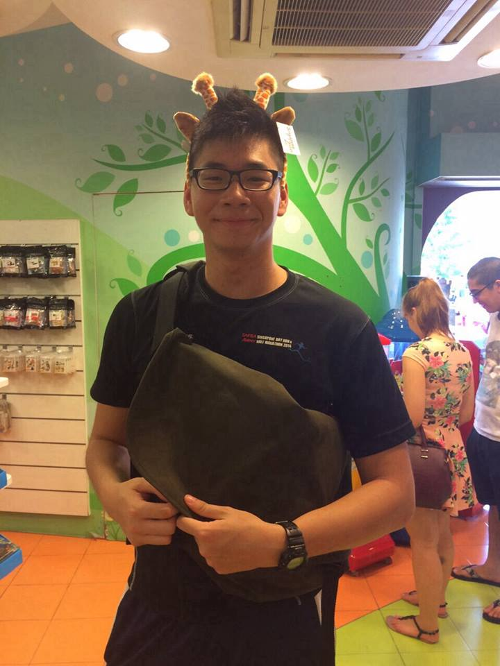
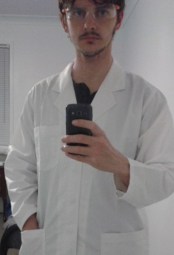

Travelocity is a project done by two students from The University of Queensland as part of INFS3202 course. It aims to Our group project aims to create a travel website where users can book a flight to and fro any airports within Australia and it will list the cheapest airfare.

Hello! I am Jowin Yien. Currently enrolled in Bachelor of Information Technology One of my motivation for pursing a Bachelor of Information Technology was to gain a skillset that could be used in any industry. As the world shifts towards more reliance on technology, equipping myself with the relevant knowledge will grant me more opportunities in the future.

Hi I'm Benjamin Wilde, I'm studying a BIT and have already finished a BSc (Mathamatics). Thanks to this, I hail from a time when discs where floppy and DOS was more than just a hispanic two.